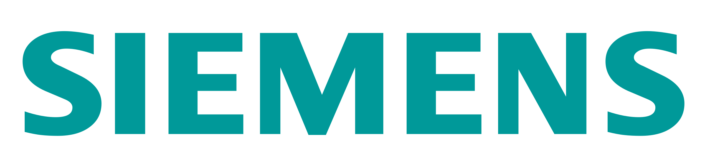
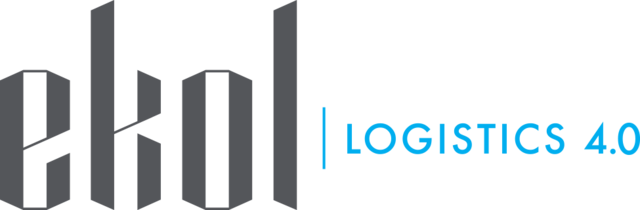

İş Geliştirme
İstanbul, TR
Kasım 2000
emirhan.keskin1923@gmail.com
2024
Beceriler
HTML CSS JS
Adobe Photoshop
Adobe Premiere Pro
Adobe Illustrator
Media
Yabancı Dil Bilgisi
İngilizce

Hakkımda
Lojistik alanında çalışmaya devam ederken aynı zamanda yazılım alanında da kendimi geliştiriyorum. Günümüz dünyasında bilgi teknolojileri aracılığıyla yapılan işlerin hızla gelişmesi, yazılım becerilerinin giderek önemini artırmaktadır. Bu nedenle lojistik alanındaki tecrübelerimi yazılım alanında da değerlendirerek daha kapsamlı bir global kariyer yapmayı hedefliyorum.
OpenAI gibi yapay zeka teknolojileriyle başlayan hızlı değişimi algılayarak, sektörümde olabilecekleri de dikkate alarak bu alandaki yetkinlik ve becerilerimi geliştirerek gelecekte teknoloji odaklı etkin bir rol oynamayı hedefliyorum. Yazılım alanında kendimi geliştirmeyi düşündüğümde yapay zekâ, veri analizi, lojistik, teknolojinin sivilleşmesi gibi konulara odaklanarak bu alanlardaki bilgi ve becerilerimi derinleştirmeyi planlıyorum. Bu yeni yolculuğa adım atarken öğrenme sürecimi paylaşmayı ve bu konuya ilgi duyan insanlarla birlikte olmayı hedefliyorum. Ortak değer üretmenin kişisel rekabete dayanmadığı bir ülkede yaşamayı diliyorum.
Gelecekte hem lojistik hem de yazılım alanında aktif rol almak için çalışmalarıma devam edeceğim.
İş Deneyimleri
 Satış Destek & Lojistik Uzmanı ext / Siemens San. ve Tic. A.S.
Eylül 2023 - Çalışıyor
Siemens Digital Industries
Yarı-Zamanlı Öğrenci Çalışan -Sipariş Yönetimi Lojistik / Siemens San. ve Tic. A.S.
Temmuz 2022 - Ağustos 2023 (1 Yıl 3 Ay)
 Stajyer / Ekol Lojistik A.Ş.
Temmuz 2021 - Eylül 2021 (3 Ay)
 Yarı-Zamanlı Satış elemanı / LC WAIKIKI A.S.
Yarı-Zamanlı Satış elemanı / LC WAIKIKI A.S.
Temmuz 2020 - Eylül 2020 (3 Ay)
 Yarı-Zamanlı Satış elemanı / Migros Ticaret A.S.
Yarı-Zamanlı Satış elemanı / Migros Ticaret A.S.
Haziran 2019 - Eylül 2019 (4 ay)
Stajyer / Ekol Lojistik A.Ş.
January 2018 - june 2018 (6 Month)
Stajyer / Ekol Lojistik A.Ş.
September 2017 - January 2018 (5 Month)
Eğitim Bilgileri
 Yıldız Teknik Üniversitesi - İşletme Yönetimi
Yıldız Teknik Üniversitesi - İşletme Yönetimi
2018 - 2023
Lisans Derecesi
 T.C. Hezarfen Mesleki ve Teknik Anadolu Lisesi
T.C. Hezarfen Mesleki ve Teknik Anadolu Lisesi
2014 - 2018
Devlet-Özel sektör projesi(Ekol Lojistik A.Ş.)